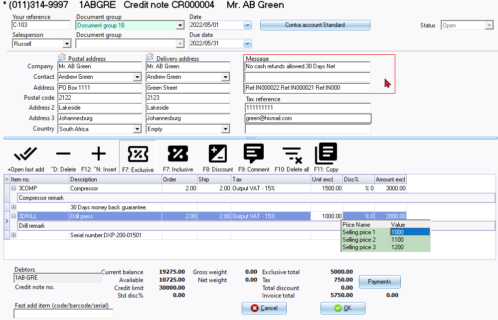

Context menu - Convert invoice to credit note / supplier return
Convert Invoices to Credit notes
Once you have posted an Invoice to the ledger, you cannot edit the Invoice.
|
|
Adjustments - not implemented in osFinancials5 For example; it may happen sometimes that a debtor (customer / client), relocates and still have outstanding invoices with the incorrect (old) address after the Invoice is posted to the ledger. You may use the Documents → Adjustment - option on the context menu (Documents list screen), to change / edit specific fields, such as the reference in the "Your reference" field, "Postal address", Contactperson, "Delivery address" and "Messages" in the Document header. The Tax reference field may also be edited. You may change the Salesperson or Document groups (Reporting group1 and/or Reporting group ) on the context menu. These changes will be reflected on the document layout files, when you print or reprint the document. |

If an Invoice is incorrectly processed and posted; or if the all the items; or some of the items on an Invoice is returned, you may use this option to create a Credit note for the Invoice to cancel the Invoice or a part of the Invoice.
To convert invoice to credit note / return note:
- Select the "Invoices" document type.
- Select the document(s) to convert.
|
|
If you need to select multiple documents, press the Ctrl or Shift key and click on each Invoice, which you need to convert to a Credit note. |
- Right-click and select Documents → Convert to credit note / supplier return option on the context menu. A confirmation screen will be displayed.
"Do you wish to continue?"
- Click on the Yes button to continue. The Credit note(s) will be available as a new unposted Credit note(s).
|
|
Once a Credit note is converted from an Invoice, the selected source Invoice from which it is converted, will be added to the third message line. You need to edit the first and second message line, if required. Note the following:
You may need to edit the quantities. For example, if 2 stock items were included on the selected source Credit note, and only 1 stock item was returned, you need to change the Quantities to 1. |

|
|
Comments and remarks The comments and remarks, if added in the source invoice will be included in the converted credit note. You may need to check and edit these, if necessary. This is important if specific information for the stock item (such as, for example, series or serial numbers, etc.) may not be applicable in the converted credit note. |
Convert Purchases to Supplier returns
Once you have posted a Purchase document to the ledger, you cannot edit the Purchase document.
|
|
Adjustments - not implemented in osFinancials5 For example; it may happen sometimes that a creditor (supplier / vendor), relocates and still have outstanding purchases with the incorrect (old) address after the Purchase document is posted to the ledger. You may use the Documents → Adjustment - option on the context menu (Documents list screen), to change / edit specific fields, such as the reference in the "Your reference" field, "Postal address", Contactperson, "Delivery address" and "Messages" in the Document header. The Tax reference field may also be edited. You may change the Salesperson or Document groups (Reporting group1 and/or Reporting group 2) on the context menu. These changes will be reflected on the document layout files, when you print or reprint the document. |
If a Purchase document is incorrectly processed and posted; or if the all the items; or some of the items on a Purchase document is returned, you may use this option to create a Supplier return for the Purchase to cancel the Purchase or a part of the Purchase.
To convert a purchase to Supplier return:
- Select the "Purchases" document type.
- Select the document(s) to convert.
|
|
If you need to select multiple documents, press the Ctrl or Shift key and click on each Purchase, which you need to convert to a Supplier return. |
- Right-click and select Documents → Convert to credit note / supplier return option on the context menu. A confirmation screen will be displayed.
"Do you wish to continue?"
- Click on the Yes button to continue. The Supplier return(s) will be available as a new unposted Supplier return document.

|
|
Once a Supplier return is converted from a Purchase, the selected source Purchase from which it is converted, will be added to the third message line. You need to edit the first and second message line, if required. Note the following:
You may need to edit the quantities. For example, if 2 stock items were included on the selected source Supplier return, and only 1 stock item was returned, you need to change the Quantities to 1. |
|
|
Comments and remarks The comments and remarks, if added in the source purchae will be included in the converted supplier return. You may need to check and edit these, if necessary. This is important if specific information for the stock item (such as, for example, series or serial numbers, etc.) may not be applicable in the converted supplier return. |